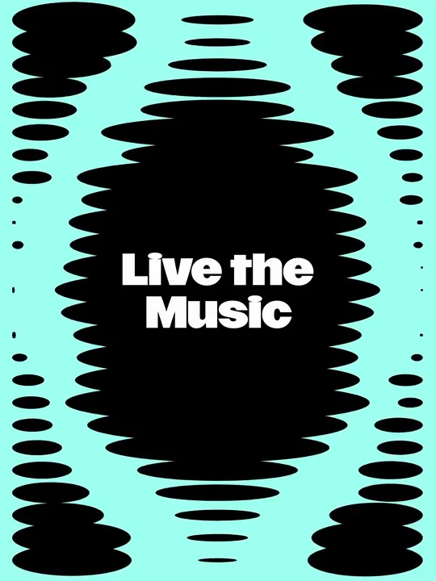
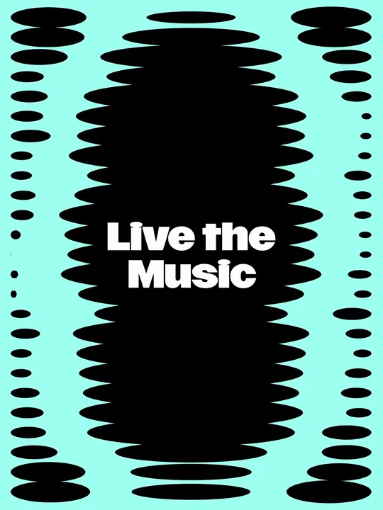
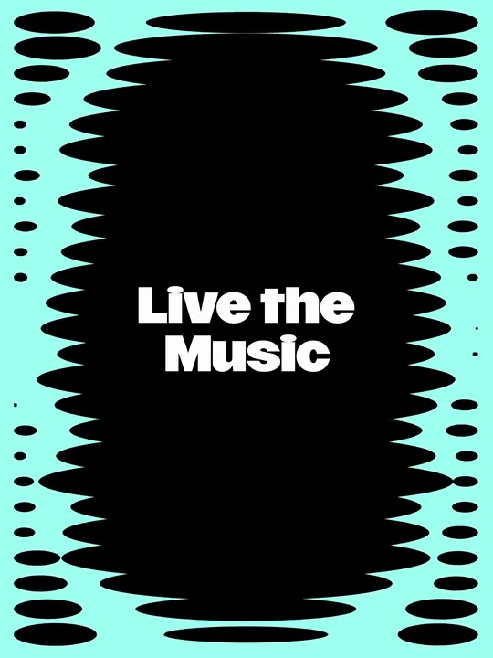

Deezer / V397
Deezer｜Live the Music 动态背景
让背景波形持续呼吸，中央标题始终清楚地停在同一个位置。
构图与编排 可播放 · 可替换内容
整体编排规则示例
查看 HTML 源码
<!doctype html><html lang="zh-CN"><meta charset="utf-8"><meta name="viewport" content="width=device-width,initial-scale=1"><title>Deezer｜Live the Music 动态背景 · sequence</title><style>html,body{margin:0;width:100%;height:100%;overflow:hidden;background:#9ef4e4}canvas{display:block;width:100%;height:100%;object-fit:contain}</style><body data-mode="sequence"><canvas width="1000" height="600"></canvas><script src="data.js"></script><script src="common.js"></script><script src="scene.js"></script><script src="bridge.js"></script></body></html>画面元素中列波形两侧波形固定双行标题薄荷背景
MOTION LANGUAGE
动作与构图
局部动作 · 构图规则
01
让重复椭圆构成流动背景
让重复椭圆构成流动背景规则示例
查看 HTML 源码
<!doctype html><html lang="zh-CN"><meta charset="utf-8"><meta name="viewport" content="width=device-width,initial-scale=1"><title>Deezer｜Live the Music 动态背景 · sequence</title><style>html,body{margin:0;width:100%;height:100%;overflow:hidden;background:#9ef4e4}canvas{display:block;width:100%;height:100%;object-fit:contain}</style><body data-mode="clip" data-start="0" data-end="3"><canvas width="1000" height="600"></canvas><script src="data.js"></script><script src="common.js"></script><script src="scene.js"></script><script src="bridge.js"></script></body></html>椭圆按固定行距排列，只改变横向长度；连续变化形成整列波形。中央列宽，侧列窄，避免变成均匀条纹。
02
为标题保留稳定黑底

双行白字固定在中央，不跟随背景漂移。背景收窄时，文字周围仍保留足够的黑色覆盖。
外围波形可以出画，中央阅读区保持完整。
03
把循环用于不同画幅
扩展两侧列或裁切上下边缘适配画幅；保持行距、中心文字与循环相位关系。
SEQUENCE
段落与节奏
点击段落，定位到上方编排示意。


画面参考 · 离散静帧
KEEP THE RELATIONSHIPS
制作其他主题
- 替换两行短文案和背景色，保持中央阅读区域、横向椭圆语言及错峰循环。
- 避免长段文字；字高与行距保持紧凑，不让字块超出稳定黑色区域。
制作约束
中列波形 / 两侧波形 / 固定双行标题 / 薄荷背景
- 椭圆的中心沿竖向排列，通过宽度变化形成向上和向下流动的轮廓。
- 中央黑色区域始终覆盖标题四周，保证反白文字可读；周边变化更大。
- 侧列与中列错开相位，让背景持续变化而不拖动标题。